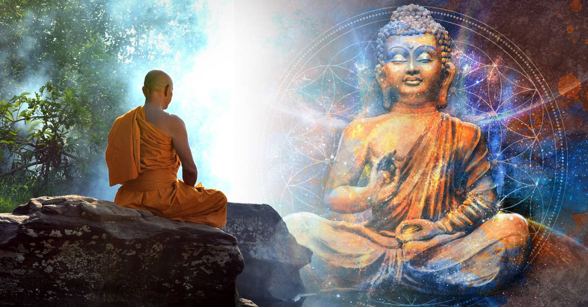

| BUDISMO |
| Inicio | Religiones Monoteistas | Religiones Politeistas | Religiones Panteistas | No Teistas | Cristianismo | Islam | Hinduismo | Religion China | Budismo |
El Budismo
El budismo es básicamente una religión no-teísta, pero también representa una filosofía, un método de entrenamiento espiritual y un sistema psicológico. Ha sido desarrollado a partir de las enseñanzas del Buda Siddharta Gautama, quien vivió en el noreste de la India en el siglo V A.C.
El buda o buddha es un concepto que define a aquel individuo que ha logrado despertar espiritualmente y que lleva una felicidad libre del sufrimiento. Cabe destacar que Buda no es un ser sobrenatural, un profeta o un Dios. El budismo no realiza postulados respecto a un Creador y sus enseñanzas no son dictadas como creencias o dogmas, sino que son los mismos practicantes quienes deben comprobarlas por si mismos para luego interiorizarlas.
El propósito del budismo es la eliminación de los sentimientos de insatisfacción vital (dukkha), producida por el anhelo ansioso (entendido como sed, deseo o avaricia). Este, a su vez, es producto de una percepción equivocada acerca de la naturaleza de la vida, la existencia y el ser.
La erradicación de esta situación se produce cuando el individuo logra despertar y adquiere una comprensión profunda de la realidad y el ser (la iluminación). Para alcanzar este estado, el budismo promueve diversas técnicas para desarrollar la meditación y alcanzar la sabiduría.
Es importante tener en cuenta que el budismo no se encuentra organizado en una jerarquía vertical (por ejemplo, no hay un líder como el Papa en el catolicismo). La autoridad religiosa se encuentra en los textos sagrados del Buda y en la interpretación que realizan los maestros y monjes.
Retomando el concepto de iluminación, precisamente se considera que un buda es un individuo que ha alcanzado dicho estado. Por lo general, este término se usa para hacer referencia al «primer Buda», es decir a Siddharta Gautama, pero en realidad no es exclusivo suyo. Esto se puede apreciar en las caras de las estatuas, que son diversas. El Buda Sonriente, por ejemplo, es otro de los más conocidos, se cree que era originario de China y se llamaba Ch’i-t’zu.
En la actualidad existen muchas escuelas de budismo, aunque en sus comienzos solamente estaba la de Siddharta Gautama. Los factores que multiplicaron los centros de enseñanza fueron dos, que se alimentaron de forma recíproca: la expansión a otras partes del mundo y la división en varias ramas. Es necesario aclarar que las enseñanzas no son idénticas en todas ellas, en parte porque los textos originales fueron reinterpretados.
